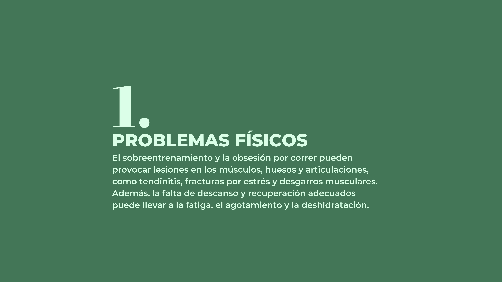

.jpg)

.jpg)
.jpg)
.jpg)
La runnorexia es un término que se utiliza para describir una obsesión o adicción al running, la persona siente una necesidad constante de correr grandes distancias y/o hacerlo con mucha frecuencia. A menudo, las personas afectadas por esta patología
tienen pensamientos negativos sobre su rendimiento deportivo o aspecto físico incluso aunque hayan logrado resultados satisfactorios.
Este tema es importante porque puede tener graves consecuencias tanto a corto como a largo plazo si no se trata adecuadamente. La runnorexia puede provocar sobrecarga muscular, malnutrición, trastornos del sueño, lesiones comunes entre los runners, así como también problemas psicológicos tales como ansiedad crónica, distorsión corporal y depresión severa etc. Además, casi siempre viene acompañada de trastornos alimentarios lo que agrava aún más el cuadro clínico global.
Está claro que correr regularmente tiene muchos beneficios saludables, pero cuando llegamos al punto donde este hábito pasa a ser obligatorio o a costa de nuestra propia integridad personal está probado científicamente qué deja de tratarse entonces de un estilo vida activo pasándose ya hacía algo poco saludable y peligroso. Tanto desde el ámbito médico cómo deportivo se debe intentar prevenir estos casos mediante educación, pero esto sólo será alcanzable mejorando el propio conocimiento acerca del mundo runner.
Aun en la actualidad, la runnorexia sigue siendo un término relativamente nuevo y no está ampliamente reconocido en la comunidad científica como un trastorno médico o psicológico oficial. Por lo tanto, se encuentran pocas citas directas de investigadores, sin embargo, la Dra. Katherine Schaumberg, psicóloga especializada en trastornos de la alimentación y el ejercicio, expresó en una entrevista con la revista Self en 2017 que "La runnorexia es un término informal que describe a personas que están obsesionadas con correr o hacer ejercicio en exceso, y que pueden tener una mala relación con la comida."
Sin embargo, la "runnorexia" no solo se trata de un problema individual, sino que también es un fenómeno social, en la actualidad, existe una presión social por mantener un cuerpo escultural, joven y atlético que ha llevado a muchas personas a
obsesionarse de esta manera con el ejercicio y a exponerse a riesgos innecesarios para lograr cuerpos musculados, esbeltos y tonificados. Ha fomentado la construcción de un modelo de belleza y salud estereotipado que está lejos de ser realista y
alcanzable para la mayoría de la población.
A pesar de ser un fenómeno complejo, que puede ser difícil de cuantificar debido a su relación con otros trastornos de la conducta alimentaria y del ejercicio, existen algunas cifras que pueden ayudar a entender la magnitud del problema.
Según un estudio publicado en el American Journal of Sports Medicine en 2015, alrededor del 10% de los corredores recreativos pueden experimentar síntomas de runnorexia, como la necesidad de correr cada vez más o la obsesión por el peso y la imagen corporal.
Copyright © 2023 Equilibrio Vital